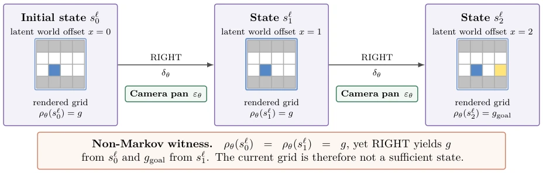
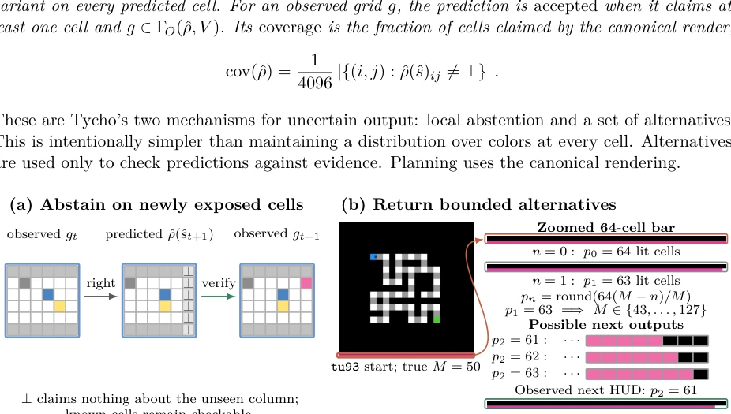
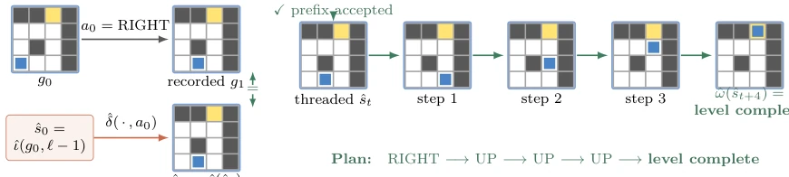
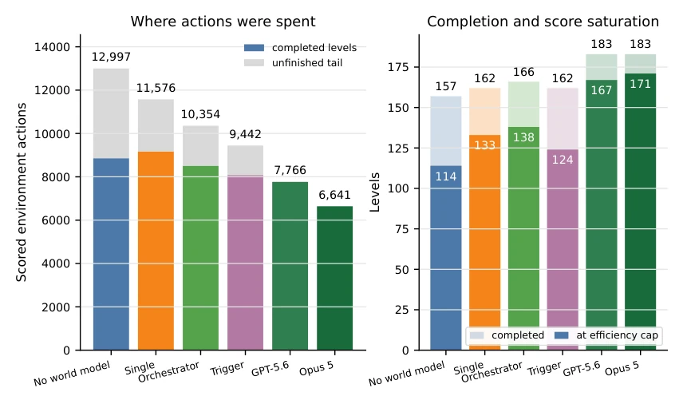
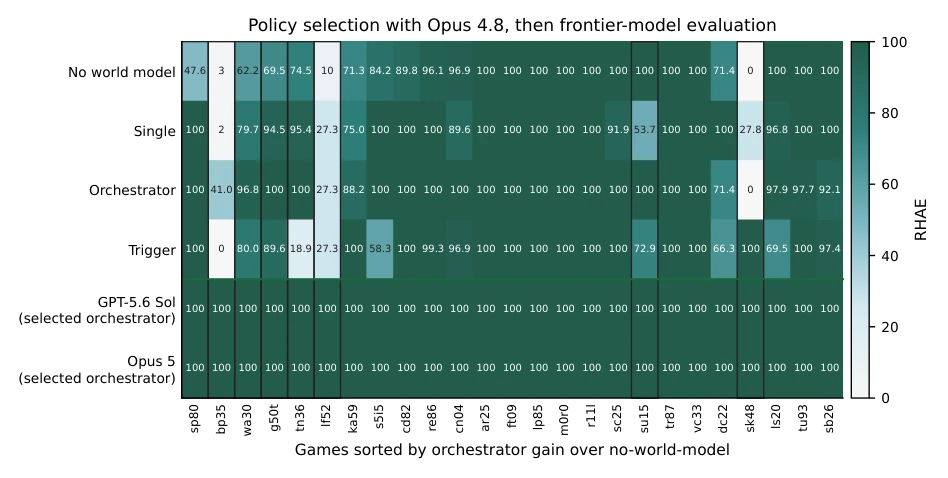
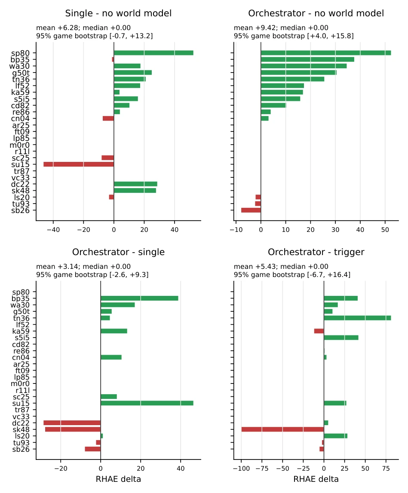
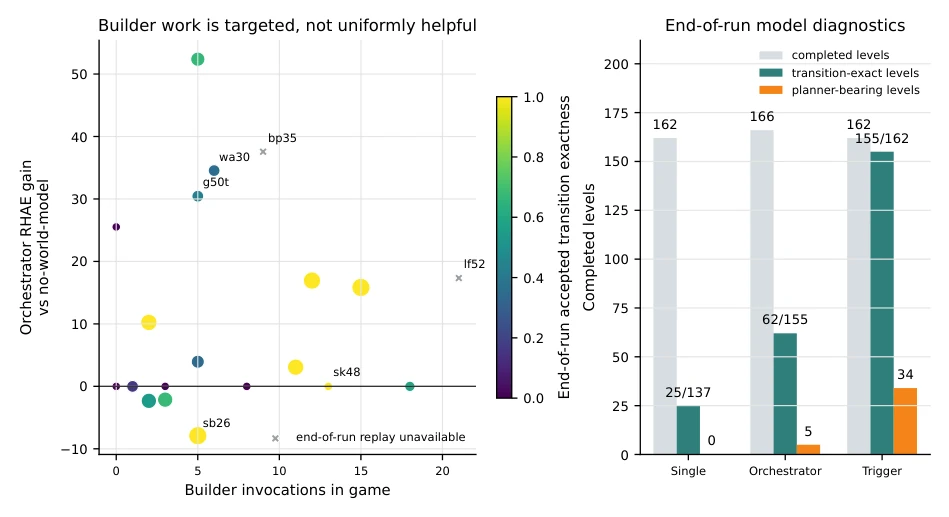
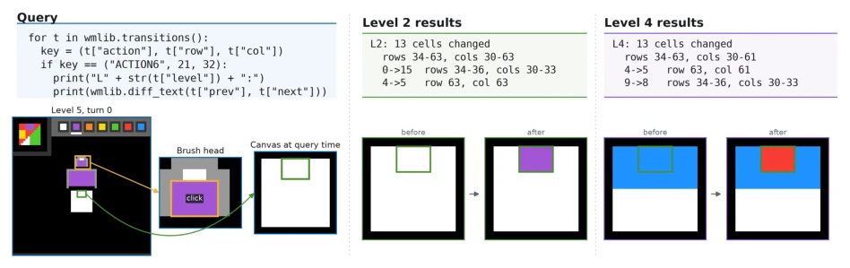
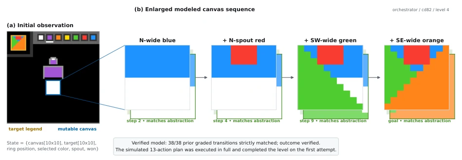

智能的核心不是存储方案，而是从少量经验中获取技能（Chollet, 2019）。ARC-AGI-3 将这一挑战推向交互式场景，每一步动作都计分，Agent 必须在探索世界机制和节省动作预算之间权衡。现有工作如 DreamTeam (Sarafian et al., 2026) 或 OPINE-World (Courtis et al., 2026) 虽然引入了可执行模型，但往往默认模型构建是必须的，或者仅关注模型本身的合成质量，忽略了“何时构建”和“谁来构建”的元认知决策。Kamradt (2026a) 指出前沿模型常出现局部正确但全局模型错误的情况。Tycho 旨在解决“主动抽象”问题：如何从昂贵交互中生成可测试模型，并判断获取或使用该模型是否值得其成本。这不仅是模型构建，更是资源分配问题。
—

Figure 2: A non-Markov scrolling viewport. Identical grids at two world offsets have different successors under RIGHT; green boxes denote transient camera frames.
Figure 1: Tycho’s shared task-time architecture. The actor reasons over the interaction record and alone commits environment actions. The optional workbench constructs or repairs an executable model, verifies it, and returns plans or diagnostics.

Figure 3: Tycho’s two mechanisms for uncertain output. In (a), scrolling exposes cells the model has not determined, so it abstains only there and receives lower coverage. Panel (b) uses an actual tu93 frame. Its 64-cell HUD quantizes a hidden move budget. After one action, three next bar lengths remain compatible with the visible evidence.

Figure 5: Synthetic illustration of verification and planning. Panel (a) connects the learned initialization, transition, and rendering maps to the formal model in Section 3. Panel (b) starts from the accepted current-level replay state and searches for a state classified as level_complete.
实验Experiments
在 25 个公开 ARC-AGI-3 游戏（183 个关卡）上评估了四种编排策略。使用 Claude Opus 4.8 进行匹配推理预算比较。结果显示，Actor 请求委托（Orchestrator）策略获得最高平均 RHAE（88.49）。使用 GPT-5.6 Sol 和 Opus 5 评估选定策略时，两者均达到 100.00 RHAE，Opus 5 比人类基线少用 61% 动作。消融发现，自动修复（Trigger）虽然提高了模型过渡匹配准确率，但 RHAE 降至 83.07，证明模型准确性不等于游戏表现（Figure 8, Figure 9）。这验证了主动抽象中“决策何时使用模型”比“模型有多准”更重要。
—

Figure 7: Action use and score saturation. Left: actions assigned to completed levels and to unfinished tails. Right: completed levels and the subset at the per-level RHAE efficiency ceiling. Trigger uses the fewest actions in the matched study, orchestrator completes the most levels, and both selected-policy frontier runs advance the completion/action frontier.

Figure 8: Per-game public-set RHAE. The first four rows are the matched Opus policy study; the separated last two rows use the selected orchestrator policy with GPT-5.6 Sol and Opus 5. Columns are sorted by the Opus orchestrator’s gain over direct reasoning. Row colors match the policy color scheme used throughout the paper, with paler cells indicating lower RHAE. Black outlines mark games discussed as case studies or diagnostics.

Figure 9: Paired public-game RHAE deltas. The no-world-model comparisons show large wins alongside many saturated ties; the lower panels compare the three model-maintenance policies directly.

Figure 11: World-model diagnostics for the matched Opus runs. Left: builder calls versus orches- trator’s RHAE gain over direct reasoning; color encodes end-of-run accepted transition match, marker size transition-exact levels, and crosses unavailable end-of-run replays. Right: completed, transition-exact, and planner-bearing levels for each model-using policy.
其他图片Other Figures

Figure 4: Querying accumulated evidence in the GPT-5.6 Sol/Orchestrator run on cd82. The displayed filter simplifies a broader transition audit issued at the start of Level 5. The focused view at left identifies the brush head and canvas in the turn-0 frame. The two matches below the results show the brush stamping its color into the same 3 × 4 canvas region across Levels 2 and 4; each transition also changes one HUD-counter cell.

Figure 12: Planning with an Executable Model in cd82, level 4. From left to right, the initial observation identifies the target and mutable canvas, the canvas is enlarged, and successive modeled states apply the planned actions until the final state reaches the target and returns level_complete. The diagonally offset cards behind the modeled states show the corresponding observed crops, with green shading marking their agreement.